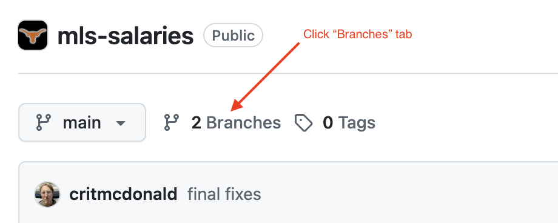
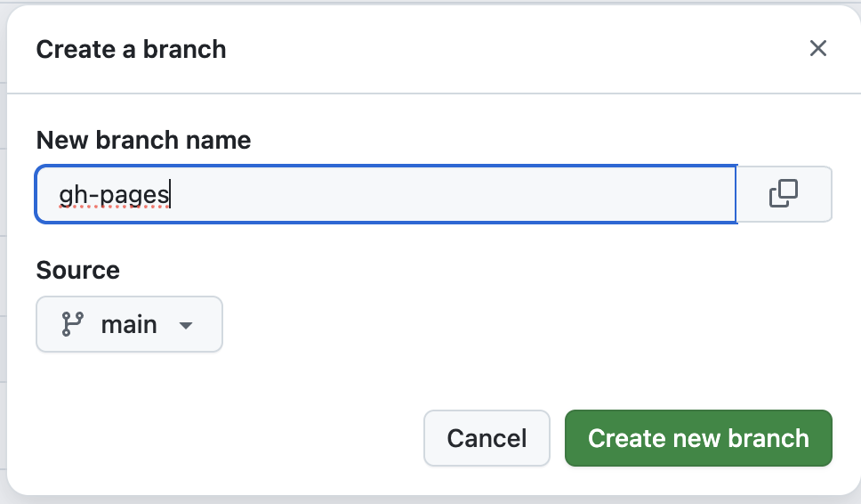
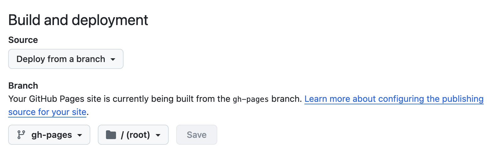
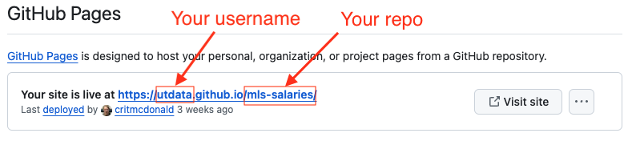

17 Using git
This chapter assumes you have some familiarity with Terminal, Git and Github. Those skills are really independent of R and RStudio, but are being applied here in an R context.
If you want to gain that basic understanding of git with an R perspective, then I recommend you start with Git for R. This guide was written by Anastasia Goodwin for R users who want to add Terminal and git skills to their workflow. Ana is UT School of Journalism & Media graduate and she wrote the book with our students in mind.
If you already know git and are just here to learn how to publish quarto websites, then here we go.
17.1 Publish to Github Pages
This assumes you already have your repo created and your main code pushed to Github.
17.1.1 Ignoring Output
With this method of publishing you don’t need to check your _site or _book directory into version control. Before proceeding you should add the output directory of your project to .gitignore.
- In your RStudio project, open your
.gitignorefile and add the following:
.gitignore
/.quarto/
/_site/If you don’t yet have a .gitignore file, see the section below about creating a good one.
If you’ve already checked your _site files into source control you may need to remove them explicitly:
Terminal
git rm -r _siteThe next time you push your code, that _site directory will get deleted.
17.1.2 Create gh-pages branch
There are a number of ways to use Github to publish your Quarto site, but the method we’ll use here is a gh-pages branch. These steps are drawn from the Quarto docs site.
Go to your repo in Github.
Click on the Branches tab.

This will list all your current branches. If you already have a
gh-pagesbranch for some reason, you can cancel this and skip to the next section, otherwise …Click on the green New branch button at the top right.
- Name the new branch exactly
gh-pages. The name matters. - Leave the Source as main.
- Click the Create new branch button.

- Name the new branch exactly
17.1.3 Set up Github Pages
Now that we have a gh-pages branch, we’ll set up Github Pages.
- While still in your Github repo, click on the Settings tab.
- Click on Pages in the left navigation.
- Under Build and deployment:
- Make sure Source is “Deploy from a branch”
- Set the branch to
gh-pagesand the folder to/ (root)and click Save.

17.1.4 Publishing
We’ll use the quarto publish Terminal command to render and send files to our gh-pages branch in Github. This works just like when we have published to Quarto Pub in other parts of this book, but we’ll specify the destination as Github instead of Quarto Pub.
While inside your project in Rstudio, click on the Terminal.
Enter the following command …
Terminal
quarto publish gh-pagesYou’ll be asked to confirm the Github Page url where your project will publish. Just hit Return on your keyboard to execute.
We are adding the gh-pages part to quarto publish gh-pages to pre-pick where we want to send the published files. You can also just quarto publish and then pick either Github Pages, Quarto Pub or other destinations as you see fit.
17.1.4.1 Private Sites
If your repo is not public then the logic within quarto publish that waits for your site to be available before opening a browser won’t work correctly. In this case you should pass the --no-browser option to bypass this:
Terminal
quarto publish gh-pages --no-browser17.1.5 Finding the url
Now that you’ve published pages, you can go back to your repo in Settings > Pages to get the URL, which is predictable based on your username and repo name.

17.2 Push vs publish vs render
Now that you’ve added Git Pages publishing to your workflow, it’s worth noting some differences in the push, publish and render commands.
- When you Render your site or a page, Quarto creates an HTML version on you local machine so you can preview it. The way we’ve set things up here, those preview files are not saved to Github at all.
- When you use
git pushyou are pushing your Quarto source files to Github. It DOES NOT republish your rendered files. - When you use
quarto publish gh-pagesto publish to Github Pages, you are Rendering all your files again AND pushing those HTML files to thegh-pagesbranch. A Github Action then fires to publish them to the internet through Github Pages.
This is all to say git push and quarto publish are separate things. To save your source code, use git push. To publish your pages, use quarto publish.
17.3 Creating a good .gitignore file
It’s good practice to have a .gitignore file that excludes things like system files and the like from version control. I usually build them using gitignore.io but it doesn’t handle from Quarto specifics.
I recommend just using a copy of my .gitignore file from this book. It is best to create this file BEFORE YOU START COMMITTING FILES into your repo.
- Create a new text file called
.gitignore. The name of the file is important … it MUST start with a period and MUST NOT have an extension like .txt. It should just be.gitignore. - Go the .gitignore file from this book and then copy/paste the contents into your newly-created file. Save and close.
You’ll know the file is named correctly if you see a little red git logo in the file icon in the Files pane.
17.4 Publishing to docs
There is an alternative way to publish to Github pages using a docs/ directory. I used that method for many years, but the rendered directory has to committed to the repo, which can cause hassles. If you insist, you can find directions here.
17.5 Other resources
Here are some existing resources that cover those skills, though they are not built to work together … they are written for different contexts and can be redundant.
- Happy Git and Github for the useR is a good resource on how to install and work with Git/Github with RStudio in mind.
- Github’s Docs are comprehensive, but it’s a lot and not written with R in mind. There is way more than the basic minimum knowledge there.